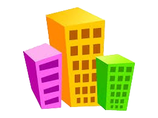

Arquitectura
Edificios Unicos del mundo

|
Casa Flotante Modernista Fue construida en los años 70 y ha servido de escena para muchas peliculas como Los Angeles de Charlie |

|
Sunny Hills Obra de un prestigioso arquitecto japones Kengo Kuma, Cuenta con forma de bambu y tiene más de 5.000 metros de tiras de madera |

|
La Casa de Cristal Una de las grandes obras del arquitecto japones Tadao Ando, Esta situada en el sur de Corea y esta realizada en hormigón, vidrio y metal |